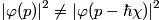

Why arg matters
- A global phase factor is irrelevant but phase shifts are relevant
- Two wavefunctions
- same (squared) modulus
- same position probability distribution
-
not same momentum!
- Fourier transform, shift property

Why arg matters (continued)
- ...
-
Fourier transform, momentum shift

- Generally, 
-
Fourier transform, momentum shift
Graphical representation
 ,
,

Graphical representation
- 2D system: we graph |ψ|2 “as usual”
-
But we use colors to represent the complex arg
- Important: +π and -π need to be represented with the same color

1D potential barrier
with
- For each E, six unknowns: A1, A2, B1, B2, C1, C2
- We can set A1 = 1, “with no lack of generality”...
- “Particle moving from left to right” => let’s set C2 = 0
- Problem reduced to four unknowns
1D potential barrier
-
Continuity of ψ and its derivative in
x1, x2 implies 4 linear equations (on A2, B1, B2, C1)
with
-
For each E, a linear system, solved symbolically
with Maxima

-
Open source Computer Algebra System
http://maxima.sourceforge.net/
-
Open source Computer Algebra System
1D potential barrier: superposition of eigenstates
- So now we know everything explicitly of the below (thanks to symbolic computation):
-
Time evolution of each eigenstate is simply

-
Now we perform a superposition (computed numerically):

1D potential barrier: superposition of eigenstates
-
-
Our choice of parameters:

-
Our choice of parameters:
Barrier (tunneling): results
Tunnel effect and a detailed view near barrier


Free software, open standards
-
Maxima: symbolic/numerical computation, outputs datafiles
- Gnuplot: from datafiles into plots
-
 Perl: as a “glue language”
Perl: as a “glue language”
- MEncoder: from plot images to videos
- OGG/Theora: as a media distribution standard
 ,
,


2D particle-in-a-box: energy spectrum, time evolution
-

- indeed
-
Time evolution:
- That's everything, let's (Gnu)plot and animate!


2D particle-in-a-box: code
-
plot.pl: Perl script-
preamble.gpi - function definitions:
-
plot.gpi
-